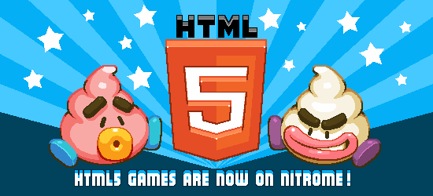

Adobe Flash Player verður fjarlægt af öllum vöfrum við enda ársins 2020.
Adobe Flash player "deyr" í 2020. Það kemur brátt endir á úrelta hugbúnaðinum flash player og hér er farið yfir helstu bitana eins og hvað það er, hvað það gerði, afhverju það verður fjarlægt og hvað það þíðir.
Hvað er Adobe Flash Player?
Flash player er tölvu hugbúnaður fyrir efni búið til á adobe flash, það getur sýnt multimedia efni, keyrt rich internet applications, streimt hljóð og myndbönd.
Hægt er fyrir flash player til að vinna á vafra sem plug-in og á farsíma sem styður það.
Flash player var hannað af Macromedia og gefið út 1. Janúar 1996. Adobe keypti macromedia árið 2005 og síðan þá hefur Adobe þróað og dreift flash player alveg frítt fyrir alla
Áhrif Flash Player
Áður fyrr hafði flash player gríðarlega stóran fjölda notenda og ástæða þess að miklu leiti var að flash player var aðal formattið fyrir vefleiki, teiknimyndir og graphic notendaviðmót(GUI) á vefsíðum.
Adobe í 2013 lýsti að meira en 400 milljón af um 1billjón tengdar tölvur ná sig í nýjustu gerðina af flash player innan við 6 vikur af uppfærslu.
Flash Player var stór hluti af barnæsku og meðfylgjandi árin sem táningur fyrir krakka sem ólust upp á tímum þegar netnotkun var að aukast
Krakkar að alast upp á árum 2000 - 2010 með msn,myspace,gamla youtube,IRC,newgrounds,leikjanet,miniclip. Flash leikir og teiknimyndir voru allstaðar á litla heimi netsins á árunum.
Vandamál
Netið er og þarf alltaf sífellt að vaxa og þróast í gegnum árin og það sem gerðist fyrir Flash player er að tæknin sem það byggist á er að dragast afturúr miðað við eitthvað eins og HTML5.
Með tíma koma gallarnir í ljós og það er ekkert leyndarmál að búnaðurinn sem kom út fyrir 24 árum síðan er nú orðinn úreltur.
Í gegnum árin hafa vandarmál verið bent á, eins og frammistaða á verkefnum, mikil batteríeyðsla á símum, öryggisveikleikar og að það skuli vera closed-platform.
Endirinn
Endirinn á flash player kemur 31. Desember.
Adobe tilkynnti árið 2017 að flash player skal ekki lengur fá stuðning og í stað hvetur heiminn að nota HTML5 staðla í stað þess.
Allar major vafranir ætla sér að fjarlæga flash player 31. des og Microsoft mun fjarlæga það alveg af windows stýrikerfinu í Janúar 2021.
Varðveiting og flash leikir
Það er fjöldi manna að vinna í því að varðveita flash player forrit,skjöl,leiki, etc.
Aðallega er þetta um flash leikina að gera, leikir sem stór hópur fólks alaðist upp með og myndi calla classics, það er mikil nostalgía.
Hér eru nokkur dæmi af varðveitingu:
Newgrounds
Allra stærstu flash player-content netsíða stofnað árið 1995 Newgrounds, sem hefur verið aðal síðan fyrir þúsundir manna til að deila leiki,teiknimyndir,teikningar,tónlist. hefur verið að hanna newgrounds player, sem er vafra app sem mun keyra allt flash efnið á síðunni.

Nitrome ætlar með hjálp frá poki.com að porta flash leiki sína yfir í HTML5 svo ekki þarf flash til að keyra leikina. Flash til HTML5 er þæginlegt, þá þarf ekki að ná í/samþyggja eitthvað eins og flash til að keyra leiki.
Flashpoint
BlueMaxima's Flashpoint project er eitt af hópum þeirra sem ætla sér að varðveita þetta efni, þau bjóða upp á risa skjalasafn af flash leikjum og teiknimyndum.
Lokaorð
Flash Player er að fara en verkin sem skapað var með þennan gamla búnað skal lifa af, þökk sé fólki sem veit hvað þetta efni skiptir miklu máli, þetta er internet history sem tengir þúsundir saman.
Leikirnir spilaði ég sem krakki einn eða með vini að metast yfir getu. Það mætti kalla flash leiki arcade leikir okkra tíma.
Teiknimyndirnar dást ég af þá og fannst fyndnar, mörg bara kjánaleg lítil verk eftir krakka næstumþví á sama aldri og ég var þá, nú mörg þeirra með störf og jafnvel sum þeirra eru enn að gera það sama bara mun fjölbreyttara og tugum sinnum betra efni.
Tónlist má líka nefna, það eru mörg glæsileg lög sem voru í leikina, eins og lagið "Glorious Morning" eftir Waterflame sem var í meistaraverkið sem nefnist Age of war, og er sama lagið sem spilar í Flashpoint myndbandinu hér að ofan, það er eiginlega bara samþykkt á netinu að þetta skuli vera "þjóðsöngur" flash leikja.
Já fólk hafa grætt æfistörf með efni sitt sem þau hafa búið til með flash player, það er magnað að það var alveg frítt. Hver sem er, sem hafði tíma og hugmyndaflug gat búið til eitthvað og svo deilt það með heiminum á síðu eins og newgrounds. Það var þetta auðvelt aðgengi að búnað sem gaf svo mörgum kleift að búa til þessi nú gömul internet classics sem á að útskýra hví við eigum og ERUM að syrgja flash player.
Það mætti summa up hvað mér og flesta sem ólust upp með flash með: "I'm not sad because it's over,I'm happy because it happened"